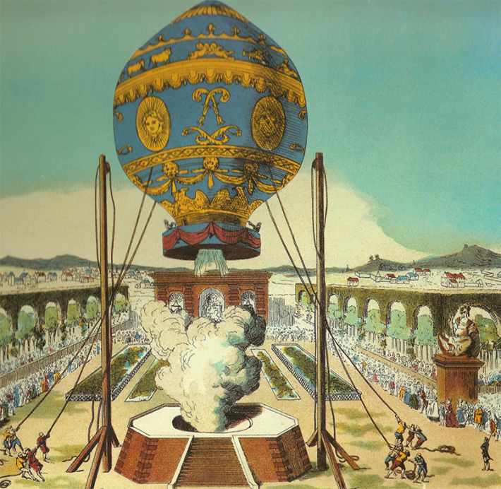
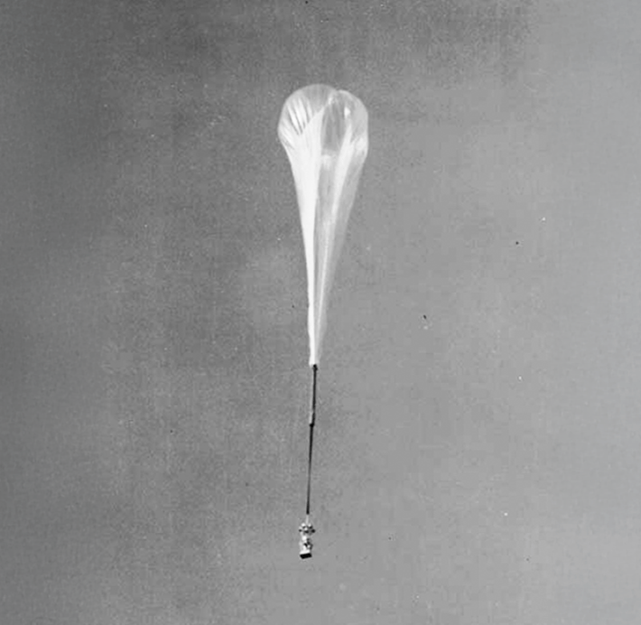
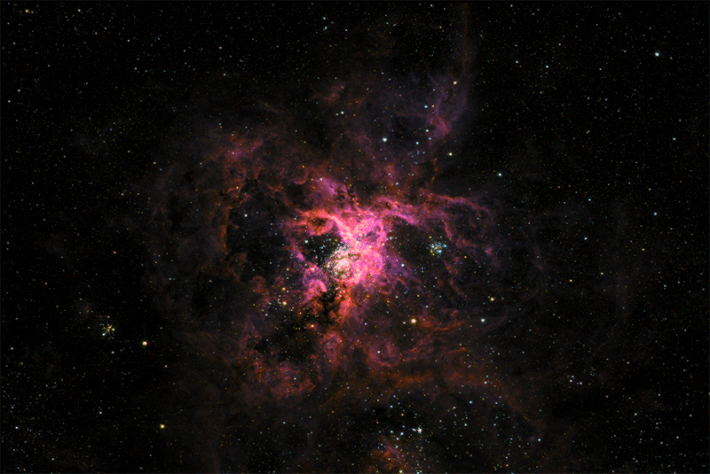

On a nearly cloudless day in 2023, a helium balloon the size of a United States football stadium lifted off from an airport in New Zealand. It quickly rose 110,000 feet above the Earth, ascending into the stratosphere, a layer of the atmosphere that is out of reach of clouds, rain, and storms. Beneath the balloon, attached by a pair of 300-foot steel cables, dangled an enormous piece of astronomical equipment: a telescope powered by solar panels and batteries. The entire payload weighed about as much as a Volkswagen Beetle.
Over the next 45 nights, the balloon and its high-tech cargo soared over Antarctica, its flight path guided only by the wind.
The flight was essentially a test run. The first order of business was to see if the new technology used to build the balloon would work. Overnight, other scientific balloons often rise and fall by as much as 45,000 feet as their helium expands and contracts with changes in air temperature, but a novel design, called super-pressure heavy-lift, allowed this balloon to maintain a tight, specific altitude. The second part of its mission: to collect detailed pictures of the cosmos with the telescope, known as SuperBIT. Soon, dazzling impressions of distant galaxy clusters crashing together—their stars, dust, and gas spreading outward—winged their way back to Earth. The pictures were pin sharp.
Balloons don’t expel pollutants or leave debris in space.
That’s because the view is different from the stratosphere than it is from a mountain top, where most land-based telescopes are based. Even at the pinnacle of the tallest mountain on Earth, the atmosphere contains water vapor and other substances that absorb certain wavelengths of lightand blur images. But where astronomical balloons do their work, the air is thin and dry, allowing for clear views of the universe beyond.
Space can offer a clear view, too, but sending a telescope up with an astronomical balloon costs a tiny fraction of what it would cost to strap it to a rocket. These telescopes tend to run between $5 and $10 million, compared to the many billions of dollars that the Hubble Space Telescope has cost over its lifetime. And unlike an orbital mission, failure is an option. If the telescope malfunctions, it can often be fixed and relaunched. Shorter mission timelines—days or months rather than years—mean parts can be regularly serviced and upgraded. It’s a lot better for the environment, too: Balloons don’t expel pollutants or leave debris in space.

HOT AIR: The Montgolfier brothers designed some of the earliest scientific balloons, including this one, which was powered by hot air and carried human passengers. Here it is pictured in Paris, on October 19, 1783. Credit: Natl1 / Wikimedia Commons.
Advances in technology keep pushing NASA’s balloons to greater heights, literally. In September 2024, a test flight out of Sweden reached a record 160,000 feet. “Each time we break another barrier, we get above enough atmospheric particles that the clarity just gets better and better,” says Sarah Roth, chief technologist for NASA’s Balloon Program Office at the Wallops Flight Facility in Virginia. Balloon-borne instruments keep growing in size and sophistication, too. More and more, researchers are dreaming up ambitious new ways to explore celestial objects and cosmic forces with balloons..
In the fall of 1783, a sheep, a duck, and a rooster were placed into a wicker basket attached to a hot air balloon in Versailles, France, while a crowd of onlookers, including King Louis XVI, stood by and watched. The creatures soon ascended to over 1,500 feet, but less than 10 minutes after takeoff, the balloon crash-landed in nearby Vaucresson Forest. A rip in the fabric had caused the balloon to deflate. (A doctor examined the animals and found them to be alive and in good health.) It was the first time a balloon had carried passengers into the sky. Modern balloon flight had been born.
Scientists themselves were soon climbing aboard. From the beginning, they had understood that lofting into the atmosphere offered new opportunities to take measurements of the world. The American physician John Jeffries sampled air at different elevations during a 1784 flight over London. Two decades later, a French chemist named Joseph Louis Gay-Lussac ascended to 13,000 feet in a balloon to study how the Earth’s electromagnetic field varied at different locations above the surface. As balloons floated ever higher, researchers realized that at certain altitudes, they had difficulty breathing, could no longer move their limbs or speak, and, eventually, would pass out from oxygen deprivation. So scientists began sending equipment in their stead.
In 1783, a sheep, a duck, and a rooster were placed into a wicker basket attached to a hot air balloon in Versailles.
But it wasn’t until 1957—years before the first space telescope—that astronomers launched the first telescope on a balloon: The uncrewed flight reached more than 79,000 feet above the Earth and produced what were, at the time, some of the sharpest and most detailed pictures taken of the sun, showing roiling convection cells on its surface and dark, feathery sunspots.The telescope’s successor, the Stratoscope II, collected infrared light fromMars and peered at interstellar dust, finding much less water than previously suspected in both cases.
While a balloon mission is both cheaper and easier than sending an observatory into space, it’s still a complex undertaking. Today’s balloons are themselves technological marvels, composed of 20-micrometer-thick polyethylene film, roughly the same thickness as plastic wrap. Sheets of this material are heat-sealed together to create a spherical structure with more than 35 million cubic feet in volume, which is then filled with helium at a specific pressure to loft it to the desired height above the Earth’s surface. Such ultra-long-distance super-pressure balloons, as they’re known, can carry up to 8,000 pounds and circle the stratosphere for almost two months.

STRATOSPERIC:In 1957, years before the first telescope was launched with a rocket, the Office of Naval Research launched Stratoscope I, an uncrewed balloon that rose more than 79,000 feet above Earth. The flight produced some of the most detailed images of the sun ever seen at the time, revealing feathery sunspots. Stratoscope II followed. Credit: US Navy / Wikimedia Commons.
One challenge balloon-borne telescopes face is that the instrument is suspended by a set of steel cables known as the flight ladder. These cables can be hundreds of feet long to minimize how much the balloon itself blocks the telescope’s view of the sky, but it means that the instrument dangles beneath it like a pendulum. Though the stratosphere is fairly low on turbulence, even minor disturbances caused by solar activity from above or terrestrial weather patterns from below could easily induce an instrument at the end of such a long cable to sway. Astronomers tend to take long exposure photographs to capture as many faint photons trickling in from the sky as they can, so even a little movement can ruin images.
To resolve this problem, the SuperBIT team placed their telescope inside three nested metal frames fitted with high-precision gyroscopes. When the telescope rotates inside the frames—it can turn 360 degrees—the gyroscopes sense changes to orientation. Reaction wheels, devices that push back against deviations in rotation—also used on satellites and space-based telescopes—correct for these changes. The telescope’s control systems are so precise that you could theoretically use them to stabilize a thread inside the eye of a standard sewing needle.
The result is that SuperBIT can keep its lens focused on a single pinprick in the sky and remain there long enough to capture astronomical images with a level of detail that rivals the Hubble.
Astronomers are now using balloons to help them investigate some of the greatest mysteries of the cosmos—from distant black holes and exoplanets to nearby asteroids and comets.
While SuperBIT is focused on using cosmic collisions to discern the behavior of dark matter, other projects are investigating forces such as gravity. In July of 2024, a balloon-borne telescope known as XL-Calibur launched from Kiruna, Sweden. On a five-day trip around the Arctic Circle, it captured X-ray images of a famous black hole known as Cygnus X-1 as well as the pulsating neutron star within the Crab Nebula. Such images can give researchers insight into the presence and distribution of hot plasma or magnetic fields around such massive cosmic objects, which could help us better understand gravity and even whether current theories of gravity need tweaking.

NEAR SPACE:A view of the tarantula nebula, taken by the SuperBIT telescope on a recent super-pressure balloon flight. The images were captured at a distance of 108,000 feet from the Earth. That's well above of the first layer of the planet’s atmosphere, where weather occurs, but still a long way from space, which begins at the Karman line, more than 300,000 feet from Earth. Credit: NASA/SuperBIT.
In August 2024, a different group conducted a test flight of a balloon carrying an infrared telescope that aims to build three-dimensional pictures of the atmospheres of “hot Jupiters,” distant exoplanets the same size or larger than Jupiter. A scientific flight led by NASA is expected in the coming years. The agency also hopes to launch another mission within the same timeframe that will generate high-resolution maps of gas and dust in the Milky Way in order to study how stars live and die in our galaxy. The telescope for that mission would have an 8-foot-wide mirror, one of the largest of any balloon-borne instrument and larger even than Hubble’s mirror, which would allow it to collect more light and see more distant objects.
Balloon missions have tended to rely on off-the-shelf parts and are mostly run by graduate students, saving money while also helping to train the next generation of scientists. “You could potentially have a fleet of these going around the Earth continuously and not even notice it in the budget of a space mission,” says Richard Massey, a physicist at Durham University in the United Kingdom who helps lead the SuperBIT project. Because the cost and time to develop them is so much lower, researchers can take more risks than they might with a space-based telescope.
With a rocket-launched instrument “almost 90 percent of the design is about forcing it through the atmosphere,” adds Fionagh Thomson of Durham University who works with the SuperBIT team. This means engineers building a balloon-borne observatory can focus less on their telescope’s ability to survive the rigors of a rocket launch, and more on its scientific capabilities. The relative affordability of balloon missions also increases access to high-quality astronomical data for countries with fewer resources and small institutions like universities, Thomson says, giving more researchers a chance to explore the outer reaches of the universe.
While balloon-borne telescopes will never fully replace ground- and space-based observatories, they’ll likely continue to play an important role in astronomical research. Still, engineers have some kinks to work out before balloon-borne telescopes can reach their full potential.
Data retrieval for SuperBIT didn’t go exactly according to the team’s initial plans, which involved sending information through SpaceX’s Starlink satellites. The instrument ended up acquiring more nightly data than could be handled through Starlink and, on occasion, the satellite connection cut out entirely.
So the team moved to a lower-tech backup plan: dropping two SD cards containing roughly 200 gigabytes from the telescope and having them parachute down to the ground. The SD cards touched down a little over 1 mile from where they had been predicted to land, in a snowy patch in the Santa Cruz province of Argentina. Cougar prints were found in the snow near one of the cards but there was no evidence of any damage. “We surmise that foam and parachute nylon are intriguing but not tasty,” wrote the authors of a paper describing the recovery.
The SuperBIT's test run came to an ignominious end when weather conditions forced operators to terminate its flight just 40 days into a 100-day mission. As it neared its targeted landing site on a remote hill in Argentina, the instrument’s parachute failed to disconnect, and it was dragged over nearly 2 miles of rough terrain, leaving a trail of debris and destroying the telescope.
Despite such difficulties, the appeal of balloon-based astronomy remains high. A once elemental idea has grown up, and is helping us understand some of the most elusive forces in the universe—from just 20 miles above ground. 
Lead photo: NASA/Bill Rodman
Källförteckning
- Originalartikel: https://nautil.us/balloon-borne-telescopes-take-off-1187232/